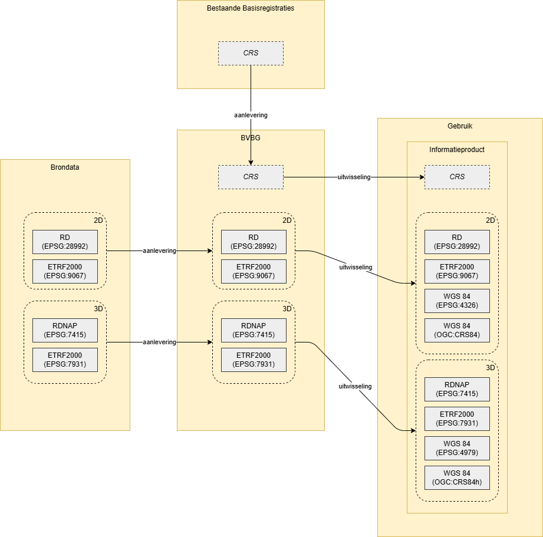

Bestuurlijke gebieden zijn die gebieden waarbinnen het Rijk, gemeenten, provincies, waterschappen en samenwerkingsverbanden zoals veiligheidsregio’s bestuurlijke verantwoordelijkheid uitoefenen. Ook de grenzen op zee die de maritieme zones ruimtelijk afbakenen, beschouwen wij als onderdeel van de bestuurlijke gebieden. Hieronder vallen de territoriale zee, de aansluitende en economische zone en het continentaal plat.
Dit conceptueel informatiemodel beschrijft deze bestuurlijke gebieden en de organisaties die deze gebieden besturen.
Status van dit document
Dit is een werkversie die op elk moment kan worden gewijzigd, verwijderd of vervangen door andere documenten. Het is geen stabiel document.
1. Inleiding
Dit document beschrijft het Conceptueel Informatiemodel Bestuurlijke gebieden (CIM-BG). Het model definieert bestuurlijke gebieden zoals gemeenten, provincies, waterschappen en maritieme zones, en hun relatie tot de verantwoordelijke overheidsorganisaties.
1.1 Doel
Het CIM-BG beoogt geo-informatie over bestuurlijke gebieden in samenhang beschikbaar te maken. Dit betekent:
Een eenduidige definitie van bestuurlijke gebieden en hun geometrie
Een heldere relatie tussen gebieden en de openbare lichamen die erover besturen
Een basis voor het beantwoorden van vragen als: "Waar ligt de grens?" en "Welk openbaar lichaam is verantwoordelijk voor dit gebied?"
1.2 Achtergrond en scope
1.2.1 Achtergrond
Het CIM-BG is ontwikkeld vanuit de visie dat geo-informatie in samenhang beschikbaar moet zijn. Deze visie is onderdeel van het programma Zicht op Nederland (ZON), waarin overheidspartijen in de GI-beraad samenwerken aan betrouwbare en breed beschikbare ruimtelijke informatie. Het document "Eisen aan model samenhangende objectenregistratie" ([EMSO]) beschrijft de uitgangspunten voor het modelleren van geo-objecten in samenhang. Het CIM-BG past deze uitgangspunten toe.
1.2.2 Bestuurlijke Gebieden
Het opstellen van een conceptueel informatiemodel voor bestuurlijke gebieden als onderwerp komt voort uit:
De behoefte aan een samenhangende voorziening voor bestuurlijke gebieden
Het gebruik in verschillende registraties en informatieproducten, zoals bijvoorbeeld in het Digitaal Stelsel Omgevingswet (DSO), waar bestuurlijke grenzen bepalen wie het bevoegd gezag is
De wens om te kunnen beantwoorden: "Wie is het bevoegd gezag op deze locatie?" en "Waar ligt de grens tussen bestuurlijke gebieden?"
1.2.3 Scope informatiemodel
Dit informatiemodel beschrijft bestuurlijke gebieden (met hun geometrie) en hun relatie met de openbare lichamen die erover bestuur uitoefenen. Voor gedetailleerde informatie over overheidsorganisaties wordt verwezen naar het Register van Overheidsorganisaties (ROO) en TOOI.
De volgende typen bestuurlijke gebieden zijn in scope:
Landgebied
Provinciegebied
Gemeentegebied
Waterschapsgebied
Veiligheidsregiogebied
Maritieme zones: territoriale zee, aansluitende zone, exclusieve economische zone en het continentaal plat
Naast veiligheidsregio's bestaan er diverse andere typen samenwerkingsorganisatie, zoals omgevingsdiensten, GGD's en recreatieschappen. In deze eerste versie van het informatiemodel zijn veiligheidsregio's het enige type samenwerkingsorganisatie in scope.
In toekomstige versies kunnen andere typen samenwerkingsorganisatie worden toegevoegd, mits dit organisatietypen zijn die ook regionaal openbaar lichaam zijn met een eigen bestuurlijk gebied.
1.2.3.2 Gebieden buiten scope
Niet alle gebieden met een ruimtelijke afbakening passen binnen de huidige scope van dit informatiemodel:
Verdragsgebieden
Gebieden waar op basis van internationale verdragen afspraken gelden tussen Nederland en een ander land, zoals het gebied in het Eems-Dollardverdrag, vallen buiten scope.
Deze gebieden kenmerken zich doordat:
Het beheer is verdeeld tussen meerdere landen op basis van een verdrag
Er geen eenduidig Nederlands regionaal openbaar lichaam is dat er bestuur over uitoefent
Een toekomstige uitbreiding zou een apart objecttype kunnen introduceren voor verdragsgebieden, met verwijzing naar het onderliggende verdrag en de verdeling van verantwoordelijkheden.
Caribisch Nederland
De openbare lichamen Bonaire, Sint Eustatius en Saba (BES-eilanden) vallen buiten de huidige scope. Hoewel deze eilanden wel degelijk openbare lichamen zijn met een bestuurlijk gebied, is nader onderzoek nodig voor het verwerken in het conceptueel informatiemodel en de te realiseren voorziening. In een toekomstige versie kunnen de gebieden van Caribisch Nederland worden toegevoegd.
Wijken en buurten
Wijken en buurten zijn subgebieden van gemeentegebieden, maar geen bestuurlijke gebieden in de zin van dit informatiemodel. Ze vallen daarom buiten de huidige scope. Wijken en buurten kunnen op termijn als registratieve ruimten worden toegevoegd en gerelateerd worden aan gemeentegebieden.
1.3 Leeswijzer
Puntsgewijs:
Hoofdstuk 2: geometrie en levenscyclus van objecten.
Hoofdstuk 3: algemene beschrijving van het CIM-BG en de inhoud per onderwerp
Hoofdstuk 4: het informatiemodel in detail
Tot slot bijlagen en referenties.
In dit document staan ook de gedetailleerde UML-diagrammen. Je kunt op alle diagrammen klikken om in te zoomen en details van de modellen te bekijken.
2. Algemeen
2.1 Levenscyclus
Objecttypen kunnen, wanneer relevant, een levenscyclusstatus, ookwel levensfase, worden toebedeeld. Hiermee wordt het mogelijk om aan te geven in welke fase een object verkeert. Door de oogharen heen kijkend kun je stellen dat er sprake kan zijn van een planfase, een aanwezigheidsfase en een afwezigheidsfase. De concrete invulling van de levensfasen kan per objecttype worden ingevuld.
De levenscyclus begint op het gedefinieerde ontstaansmoment, dat per objecttype kan verschillen. Zo is voor bepaalde objecttypen een planstatus relevant, terwijl dit voor andere objecttypen minder relevant lijkt. Wanneer een object niet meer bestaat in die werkelijkheid, bereikt het een eindfase.
2.1.1 Levenscyclusstatussen Registratieve Ruimte
De levenscyclusstatussen van een Registratieve Ruimte bestaan uit:
Ontwerp - Object waarvan de vaststelling wordt voorbereid
Niet gerealiseerd - Object waarvan de voorbereiding niet heeft geleid tot vaststelling
Vastgesteld - Object dat door het bevoegd gezag is benoemd of afgebakend op grond van wet- of regelgeving
Ingetrokken - Object dat door het bevoegd gezag is ingetrokken op grond van wet- of regelgeving
In het algemeen kun je stellen dat objectlevenscycli in het [EMSO] op hoofdlijnen een levenscyclus kent van planfase naar aanwezigheidsfase, naar afwezigheidsfase.
2.2 Geometrie
Voor de representatie van de locatie, oriëntatie en vorm van een object uit de werkelijkheid, gebruiken informatiemodellen geometrieën. De dimensie van een representatie variëert van nuldimensionaal (0D) tot driedimensionaal (3D). Objecten worden altijd geplaatst in een tweedimensionele (2D), of driedimensionele (3D) ruimte. Voor de vastlegging van (informatie over) geometrieën gelden een aantal belangrijke principes die volgen uit verschillende standaarden en initiatieven. Een aantal documenten is hierin leidend:
Het [EMSO] gebruikt gestandaardiseerde geometrietypen uit [ISO-19107-2003]. Dit voorziet zowel in de opname van de coördinaten van de geometrie, als van het coördinatenstelsel. Van sommige objecten is de onderlinge relatie van belang; ook wel ruimtelijke relaties genoemd. De BGT-gegevenscatalogus beschrijft bijvoorbeeld welke objecten samen een landsdekkend geheel vormen.
Bovendien heeft een geometrische representatie vaak ook kwaliteitskenmerken, bijvoorbeeld ten aanzien van nauwkeurigheid en inwinregels. Dit document formuleert geen kwaliteitseisen. Het uitgangspunt is dat deze in de bronregistraties zelf gehanteerd worden. Van de gegevens die via het informatiemodel, óf daarop gebaseerde productmodellen, worden uitgewisseld, kan daarom een bepaalde kwaliteit verwacht worden. Deze gegevenskwaliteit is een uitgangspunt voor de uiteindelijk uitgewisselde gegevens.
Samengevat legt het informatiemodel de volgende informatie over een geometrie vast: type, dimensie, coordinaatreferentiesysteem (CRS) en ruimtelijke relaties. Kwaliteitskenmerken (o.a. nauwkeurigheid, inwinregels en topologische regels) volgen uit de bronregistraties.
De volgende paragrafen beschrijven welke eisen op het [EMSO] van toepassing zijn én hoe die concreet worden vastgelegd. De eisen en uitgangspunten zijn op zichzelf geen onderdeel van dit document. We verwijzen hiervoor vanuit de tekst naar de betreffende documentatie. Indien niet aanwezig en de eis op zichzelf mogelijk onvoldoende helder is, bevat dit hoofdstuk een korte uitleg over de totstandkomming, of interpretatie van een eis.
2.2.1 Aansluiting op Basismodel Geo-informatie (NEN3610)
Het [EMSO] valt binnen het toepassingsgebied van het Basismodel Geo-informatie [NEN3610-2022] (hierna: NEN3610) omdat het objecttypen beschrijft die direct herleidbaar zijn tot een locatie ten opzichte van de aarde. Het wordt daarom gemodelleerd als extensie op het semantische model uit NEN3610.
Het semantische model van NEN3610 bestaat uit een aantal objecttypen die objecten uit de werkelijkheid op hoofdlijn classificeren. In het [EMSO] zijn de objecttypen, voor zover dit past, gemodelleerd als specialisatie van het NEN3610 objecttype Geo-Object of (bij voorkeur) een specialisatie van Geo-object. De verbinding met deze semantische klassen is opgenomen in het conceptueel model.
2.2.2 Geometrietypen
Het [EMSO] legt geometrie vast als eigenschap van een object. De geometrie representeert daarmee de locatie, orientatie en vorm van een object. Voor dit doeleinde zijn verschillende typen geometrieën beschikbaar. Deze typen verschillende in niveau van data-complexiteit en dimensionaliteit (zi ook: Dimensies). ISO 19107 biedt hiervoor een aantal basisgeometrieën om een individueel object uit de werkelijkheid te representeren. Dit zijn de geometrische primitieven. Soms geldt een verzameling van objecten uit de werkelijkheid als één geheel. Daarvoor zijn geometrische aggregaties geschikt. Het [EMSO] onderscheid in elk geval de ISO 19107-geometrietypen uit onderstaande tabel.
Primitieve
In ISO 19107 - Enkelvoudig
In ISO 19107 - Aggregatie
Punt
GM_Point
GM_MultiPoint
Lijn
GM_Curve
GM_MultiCurve
Vlak
GM_Surface
GM_MultiSurface
Volume
GM_Solid
GM_MultiSolid
Het volstaat om een ISO 19107-geometrietype toe te passen in het informatiemodel. Raadpleeg voor een uitgebreidere toelichting op dit onderwerp hoofdstuk 2 van de handreiking Geometrie in model en GML [GIMEG]. Dit legt inhoudelijk uit hoe het geometriemodel uit ISO 19107 [ISO-19107-2019] kan worden toegepast en wat het geldende Nederlands profiel is. De toepassing van de ISO 19107-geometrietypen, zorgt ervoor dat het geometrietype helder is en dat zowel de coördinaten als het coördinatenstelsel kunnen worden opgenomen. In het bijzonder eist het [EMSO] aansluiting op ISO 19125 Simple Features. Deze standaard maakt een selectie uit het ISO 19107 geometriemodel. Het neemt daaruit alleen de meest gebruikelijke geometrietypen over.
Het [EMSO] schrijft expliciet aansluiting op de ISO-standaard Simple Features voor ([ISO-19125]).Simple Features gebruikt geometrietypen uit de veel uitgebreidere standaard ISO 19107. De typen uit dit model hanteren we doorgaans als «Primitief datatype». Het Geometrie-object, waarvan alle specifieke geometrietypen zoals punt, lijn, vlak en volume afgeleid zijn, heeft veel kenmerken en operaties. Belangrijk hier zijn:
SRID: dit modelleert de verwijzing naar het Spatial Reference System, in ons geval het coördinaatreferentiesysteem (CRS, zie: Coördinaatreferentiesystemen.
metadata: optioneel attribuut voor het opnemen van verwijzingen naar documentatie die informatie geeft over de implementatie van het geometrie-object. Dit kunnen we wellicht gebruiken voor bijvoorbeeld de gerealiseerde nauwkeurigheid van de geometrie.
Noot: Spatial Reference System vs. Coördinaatreferentiesysteem
Het [EMSO] hanteert altijd expliciete geometrie. Hierdoor zijn betere analyses en kwaliteitscontroles mogelijk. Bovendien maakt dit het optrekken van 2D-geometrie naar 3D-geometrie mogelijk. Dit in tegenstelling tot modellen met geparametriseerde geometriebeschrijvingen in CAD- of BIM-modellen (impliciete geometrie).
2.2.3 Dimensies
Bij dimensie wordt onderscheid gemaakt tussen de termen: primitieve, ruimte en model. Er zijn vier gradaties van primitieven, oplopend van 0D tot en met 3D. Elke hogere graad voegt een extra dimensie toe. Zo staat 0D alleen het primitieve punt toe, maar 1D zowel punt als lijn. 2D voegt daar vlak aan toe en 3D volume.
Figuur 2Overzicht van geometrische primtieven en de bijbehorende dimensionaliteit
Deze primitieven kun je plaatsen in een tweedimensionale of driedimensionale ruimte. Afhankelijk van de hoogste dimensie van de primitieve, in combinatie met gehanteerde dimensie van de ruimte, is sprake van een 2D-, 2.5D- of 3D-model. Samengevat komt het hierop neer:
2D-model: modelleert 2D-primitieven in een 2D-ruimte;
2.5-model: modelleert 2D-primitieven in een 3D-ruimte;
3D-model: modelleert 3D-primitieven in een 3D-ruimte.
Het EMSO schrijft voor dat moet worden voorgesorteerd op de mogelijkheid om de driedimensionale beschrijving van een object op te nemen. Per objecttype kan de wijze van vastlegging verschillen. In sommige gevallen representeert een volume (3D-model) het object het beste. In andere gevallen volstaat een punt, lijn of vlak (2D-model) met eventueel een hoogteligging (2.5D-model). Het vastleggen van beschrijvende eigenschappen als hoogte of relatieve hoogteligging in combinatie met een 2D-geometrie (primitieve) vallen niet onder de noemer 3D. Het is mogelijk om een relatieve hoogteligging als afgeleid gegeven op te nemen indien nodig voor informatieproducten.
Dit betekent dat het model ruimte moet bieden aan 3D-primitieven in een 3D-ruimte. Hieruit volgt dat het [EMSO] in zijn totaliteit beschouwd moet worden als een 3D-model. Het verschilt per onderwerp of een uitwerking in 2D (bijv. BestuurlijkGebied), 2.5D (bijv. Verharding), danwel 3D(bijv. Gebouw) nodig is.
Het [EMSO] hanteert ten aanzien van dimensies tegenstrijdige uitgangspunten. Enerzijds eist het aansluiting op ISO 19125, dat het model beprekt tot 2D-primitieven. Anderzijds eist het EMSO dat het model voorsorteert op driedimensionale objectbeschrijving. Het [EMSO] interpreteert deze uitgangspunten als volgt: ISO 19125 is leidend voor 2D-objecten en ISO-19107 voor bogen en 3D-objecten.
Hoofdstuk 5 tot en met 8 in het [EMSO] geven per geo-informatieobject aan welk geometrietype van toepassing is. RegistratieveRuimte (waar BestuurlijkGebied onderdeel van is) wordt tweedimensionaal vastgelegd. Hiervoor zijn de geometrietypen GM_Surface (vlak) of GM_MultiSurface (multi-vlak) geschikt. Het hoofdstuk 4. Conceptueel Informatiemodel Bestuurlijke Gebieden van dit document beschrijft per geo-informatieobjecttype in detail hoe het [EMSO] dit vormgeeft.
2.2.4 Coördinaatreferentiesystemen
Het Basismodel Geo-informatie [NEN3610-2022] stelt iedere geometrische dataset/geometrie moet zijn voorzien van een verwijzing naar het coördinaatreferentiesysteem waarin de coördinaten van de gemetrie zijn beschreven. Welk coördinaatreferentiesysteem in een situatie van toepassing is, wordt bepaald door verschillende factoren, zoals: dimensionaliteit van de gebruikte primitieven, dimensionaliteit van de ruimte en het toepassingsgebied. De dimensionaliteit van primitieven en ruimte zijn in de vorige twee paragrafen toegelicht.
Het toepassingsgebied beschrijft het deel van het van het aardoppervlak waarop het [EMSO] van toepassing is. Dit betreft het Nederlands grondgebied. In het informatiemodel worden alleen objecten opgenomen die gelegen zijn binnen het Europese grondgebied van het Koninkrijk der Nederlanden, inclusief de daarbij behorende territoriale wateren en Baarle-Hertog [EMSO]. Op basis van deze criteria zijn de volgende vier coördinaatsystemen relevant:
World Geodetic System 1984 (WGS 84) onnauwkeurige realisatie van ITRS, gebruikt voor het Amerikaanse GPS
European Terrestrial Reference System 1989 (ETRS89) nauwkeurige realisatie van ITRS op epoche 1989.00, gebruikt in Europa
Nederlandse Stelsel van de Rijksdriehoeksmeting (RD)
Gebruikersinformatie Wegkenmerkendatabase WKD (niet meer online beschikbaar)
De onderstaande figuur is een schematische weergave van de ondersteunde CRS-en bij aanlevering en uitlevering. De volgende paragrafen beschrijven in meer detail de ondersteunde CRS-en bij aan- en uitlevering.

Figuur 3Overzicht van de ondersteunde CRS-en bij aanlevering en uitlevering
Redactionele noot: snippets
2.2.4.1 Aanlevering
Het toepassingsgebied en de dimensie bepalen welke CRS-en bij aanlevering van geometrieën geldig zijn. Aan de ene kant bestaat er onderscheid in de dimensie van geometrieën: sommige geometrieën zijn 2-dimensionaal, anderen 3-dimensionaal. Voor objecten gelden de volgende CRS-en: RD en ETRS89.
Er zijn verschillende realisaties van ETRS89 in omloop. Wij volgen het advies van het Regional Reference Frame Sub-Commission for Europe (EUREF) om de Nederlandse realisatie van ETRS89 te gebruiken die is gekoppeld aan de ETRF2000-realisatie. Verder wordt bij aanlevering rekening gehouden met een lijnlengte van maximaal 200 meter. Dit besluit volgt het langelijnenadvies van de NSGI, dat is overgenomen in [gebruik-crs] in verband met compatibiliteit met RDNAPTRANS™.
Voor het CRS van 2D-geometrieen gelden de volgende EPSG-codes:
Bij uitlevering in RD zijn dezelfde realisaties beschikbaar als bij aanlevering. Bij uitlevering in ETRS89 kan de geometrie, naast als dezelfde realisaties als bij aanlevering, ook als de geografisch ensemble van CRS-en worden opgevraagd. Aanbovolen wordt om dan in de metadata te vermelden dat het de de realisatie ETRF2000 betreft.
Hierbij zijn de OGC-codes CRS84 en CRS84h respectievelijk de long-lat-varianten van de 2D en 3D WGS84-realisaties met de EPSG-codes 4326 en 4979. Aanbevolen wordt om in de metadata dan te vermelden dat een nultransformatie vanaf ETRF2000 gebruikt is.
2.2.5 Ruimtelijke relaties
Voor ruimtelijke relaties tussen de objecten kunnen we gebruik maken van het Dimensionally Extended Nine‐Intersection Model (DE-9IM). Dit is een topologisch model voor het beschrijven van ruimtelijke relaties in een 2D-model. Dit model is uitgewerkt in de Simple Features-standaard [ISO-19125] en wordt aangeraden in [NEN3610-2022] en [sdw-bp]. Deze relaties zijn geïmplementeerd in veel geografische softwareomgevingen en ook in GeoSPARQL. Hieronder een overzicht met de originele Engelse naam en daarachter de vertaalde Nederlandse naam uit NEN3610-2022.
Dit informatiemodel beschrijft Bestuurlijke Gebieden: de ruimtelijke gebieden waarover regionale openbare lichamen bestuur uitoefenen, en hun geometrie.
3.3 Beschrijving inhoud
Dit hoofdstuk beschrijft de inhoud van het thema Bestuurlijke Gebieden.
3.3.1 Bestuurlijke gebieden
Er is een belangrijke relatie tussen een regionaal openbaar lichaam en een bestuurlijk gebied. In de bestuurlijke indeling van het Koninkrijk der Nederlanden is een regionaal openbaar lichaam een overheid die bepaalde taken uitvoert binnen een bepaald ruimtelijk gebied. De belangrijkste regionale openbare lichamen zijn het Rijk, de provincies, de gemeenten en de waterschappen, maar ook veiligheidsregio's behoren hiertoe. Een bestuurlijk gebied is dan dat bepaalde ruimtelijk gebied waarover een regionaal openbaar lichaam bestuur uitoefent.
3.3.1.1 Levenscyclus en tijdlijnen Bestuurlijk gebied
Ook voor bestuurlijke gebieden worden deze 4 levenscyclusstatussen ondersteund. Het moet echter nog blijken of er behoefte is aan een planfase voor bestuurlijke gebieden. Een mogelijke toepassing zou kunnen zijn dat een herindelingsplan nog voor vaststelling zijn weerslag krijgt in de registratie, in de vorm van bestuurlijke gebieden met de status Ontwerp.
De status Vastgesteld is de status die aangeeft dat een bestuurlijk gebied bestaat in de werkelijkheid. Dit komt overeen met de aanwezigheidsfase.
De status Ingetrokken is de eindstatus van een bestuurlijk gebied. Dit komt overeen met de afwezigheidsfase.
De levenscyclus van een bestuurlijk gebied is afhankelijk van het bestaan van het besturende regionaal openbaar lichaam.
3.3.1.1.1 Tijdlijnen en actualiteit
Dit onderdeel is niet-normatief.
Voor het beheren en gebruiken van gegevens over bestuurlijke gebieden is het belangrijk om te kunnen bepalen welke gegevens op een bepaald moment geldig zijn. Op logisch modelniveau wordt daarvoor het historiemodel van [NEN3610-2022] toegepast.
In de levenscyclus van objecten kunnen kenmerken veranderen. Om deze veranderingen te kunnen vastleggen en raadplegen, worden versies van objecten bijgehouden. Elke versie wordt beschreven door een registratieobject met twee tijdlijnen:
Tijdlijn geldigheid: beschrijft de periode waarin een object in de werkelijkheid bestaat of geldig is. Hiervoor worden de eigenschappen beginGeldigheid en eindGeldigheid gebruikt.
Tijdlijn registratie: beschrijft de periode waarin een versie van de gegevens in de registratie bestaat. Hiervoor worden de eigenschappen tijdstipRegistratie en eindRegistratie gebruikt.
Met behulp van de tijdlijn geldigheid kan een afnemer bepalen welke gegevens actueel (nu geldig) zijn:
Actueel: gegevens waarvan de beginGeldigheid in het verleden ligt en eindGeldigheid leeg is of in de toekomst ligt.
Tijdreizen: door een specifieke datum op te geven kunnen gegevens worden opgevraagd die op dat moment geldig waren.
3.3.1.2 Regionaal Openbaar Lichaam
Een regionaal openbaar lichaam is een overheidsorganisatie die bepaalde taken uitvoert binnen een bepaald ruimtelijk gebied. De belangrijkste regionale openbaar lichamen zijn het Rijk, de provincies, de gemeenten en de waterschappen, maar ook veiligheidsregio's behoren hiertoe.
Regionale openbare lichamen hebben met elkaar gemeen dat ze een bestuurlijk gebied hebben — andere overheidsorganisaties hebben dat niet. [TOOI-ONT-1.6.2]
3.3.1.3 Bestuurlijk gebied
Een bestuurlijk gebied, ook wel bestuursgebied genoemd, is het grondgebied waarover het bestuursorgaan haar invloed uitoefent. Een bestuurlijk gebied is dus niet hetzelfde als het voor het gebied verantwoordelijke bestuur. Het gebied en het bestuur zijn weliswaar aan elkaar gerelateerd, maar hebben hun eigen unieke eigenschappen. Een bestuurlijk gebied heeft een ruimtelijke aanduiding in de vorm van een geometrie en kan ook een naam toegewezen krijgen. De naam waarmee men in het dagelijkse spraakgebruik het grondgebied associeert, is meestal de officiële naam van het gerelateerde openbaar lichaam, bijvoorbeeld 'Apeldoorn' of 'Zeeland'.
3.3.1.4 Maritieme zones
Een regionaal openbaar lichaam heeft vaak maar één bestuurlijk gebied. Een uitzondering hierop is het openbaar lichaam Rijk. Naast het Landgebied bestuurt het Rijk ook vier typen gebieden op zee; zogenaamde maritieme zones. In totaal onderscheidt dit model vijf typen bestuurlijke gebieden die onder de bestuurlijke verantwoordelijkheid van het Rijk vallen.
3.3.1.5 Rijksgrens en Eems-Dollard
De Rijksgrens in het Eems-Dollard gebied volgt de equidistantielijn volgens de Nederlandse rechtsopvatting. Deze grens is vastgesteld "sans préjudice" conform artikel 4 van het Westereemsverdrag, wat betekent dat de juridische standpunten van beide landen worden voorbehouden.
Voor de weergave van de Rijksgrens op kaarten en in registraties wordt het gebied begrensd door de Westereemsverdragslijn en de equidistantielijn als Nederlands grondgebied weergegeven.
3.4 CIM-BG in context
De bestuurlijke gebieden in dit informatiemodel hebben relaties met objecten in andere standaarden en registraties. Deze sectie beschrijft de belangrijkste relaties en hoe de gegevens uit verschillende bronnen samenhangen.
Het CIM-BG is ontwikkeld binnen de context van verschillende programma's en uitgangspunten:
Zicht op Nederland (ZON): Het programma waarbinnen geo-informatie in samenhang beschikbaar wordt gemaakt. Zie Achtergrond in de inleiding.
Federatief Datastelsel (FDS): Het CIM-BG sluit aan bij de uitgangspunten en principes van het Federatief Datastelsel. Belangrijke principes zijn data bij de bron (data wordt niet gekopieerd maar beschikbaar gesteld), interoperabiliteit tussen datastelsels, en decentraal wat kan, centraal wat moet.
EMSO: De "Eisen aan model samenhangende objectenregistratie" ([EMSO]) beschrijft de uitgangspunten voor het modelleren van geo-objecten in samenhang. Het CIM-BG past deze uitgangspunten toe.
3.4.2 Bronnen
De geometrie van bestuurlijke gebieden wordt afgeleid uit de in dit hoofdstuk beschreven bronnen.
3.4.2.1 Basisregistratie Kadaster (BRK)
De geometrie van gemeenten, provincies en het landgebied wordt afgeleid uit de kadastrale kaart, onderdeel van de Basisregistratie Kadaster (BRK). De relatie tussen bestuurlijke grenzen en de kadastrale kaart is als volgt:
Percelen vormen de basis: elk perceel behoort tot precies één kadastrale gemeente
Kadastrale gemeenten zijn via een relatietabel gekoppeld aan burgerlijke gemeenten
Burgerlijke gemeenten zijn via een relatietabel gekoppeld aan provincies
De gemeentegrens is dus de verzameling perceelsgrenzen waar aan weerszijden verschillende kadastrale (en dus burgerlijke) gemeenten liggen.
Het concept 'Burgerlijke gemeente' uit de BRK is gelijk aan het concept 'Gemeentegebied' in dit informatiemodel.
Bij gemeentelijke herindelingen wordt de nieuwe grens vastgelegd in een grensbeschrijving door de provincie, conform artikel 2 lid 2 van de Wet algemene regels herindeling (Wet Arhi). Deze grensbeschrijving geschiedt met behulp van kadastrale kenmerken of, indien dat niet mogelijk is, met behulp van coördinaten. De nieuwe grens wordt vervolgens in de kadastrale kaart verwerkt.
3.4.2.2 Dienst der Hydrografie
De gebiedsinformatie van de maritieme zones is afkomstig van de Dienst der Hydrografie van het Ministerie van Defensie [Dienst-Hydrografie]. De Dienst der Hydrografie beheert de gegevens over de territoriale zee, aansluitende zone, exclusieve economische zone en het continentaal plat.
3.4.3 Afnemers
Bestuurlijke gebieden worden door veel partijen gebruikt. Deze sectie beschrijft enkele belangrijke afnemers. Voor een vollediger overzicht van afnemers, zie het scopedocument Bestuurlijke Gebieden.
3.4.3.1 Basisregistratie Topografie (BRT)
De Basisregistratie Topografie (BRT) bevat ook gemeente-, provincie- en rijksgrenzen, in de vorm van 'Registratieve Ruimten'. De grenzen in de BRT worden afgeleid uit dezelfde bron als de grenzen in dit informatiemodel: de kadastrale kaart (BRK).
Het conceptuele verschil is dat de BRT grenzen aanbiedt voor cartografische doeleinden, terwijl dit informatiemodel gebieden definieert vanuit hun juridisch-administratieve betekenis. Dit informatiemodel beschrijft wat een bestuurlijk gebied is en hoe het zich verhoudt tot het openbaar lichaam dat erover bestuurt. De BRT kan op basis hiervan afgeleide representaties aanbieden voor verschillende toepassingen.
3.4.3.2 Digitaal Stelsel Omgevingswet (DSO)
Een belangrijke afnemer van informatie over bestuurlijke gebieden is het Digitaal Stelsel Omgevingswet (DSO). De Omgevingswet kent het begrip werkingsgebied: de ruimtelijke afbakening waarbinnen een juridische regel van toepassing is. De informatiemodellen [DSO-CIM-OW] en [DSO-CIM-ORG] beschrijven hoe werkingsgebieden en organisaties in het DSO worden gemodelleerd.
3.4.3.2.1 Locatie en ambtsgebied
In [DSO-CIM-OW] is locatie het overkoepelende begrip voor de ruimtelijke dimensie van een regel of object. Een locatie beschrijft middels coördinaten waar iets van toepassing is. Locaties kunnen de vorm hebben van een gebied, lijn of punt.
Een bijzonder type locatie is het ambtsgebied. Dit is een locatie die verwijst naar de bestuurlijke grenzen van een openbaar lichaam, zonder dat een expliciete geometrie hoeft te worden aangeleverd. In plaats daarvan bevat een ambtsgebied een verwijzing naar een voorziening voor bestuurlijke grenzen.
Een ambtsgebied kan worden gebruikt als werkingsgebied voor regelingen die gelden voor het gehele bestuurlijke gebied van een openbaar lichaam. De geometrie wordt dan automatisch afgeleid uit de actuele bestuurlijke grenzen.
Het bestuurlijk gebied uit dit informatiemodel komt conceptueel overeen met het ambtsgebied in het DSO. Een voorziening voor bestuurlijke grenzen, gebaseerd op dit informatiemodel, kan daarmee dienen als bron voor ambtsgebieden in omgevingsdocumenten.
3.4.4 Standaarden en organisaties
3.4.4.1 NEN 3610
Dit informatiemodel is een extensie op het Basismodel Geo-informatie [NEN3610-2022]. Bestuurlijk gebied is gemodelleerd als specialisatie van de NEN 3610 Registratieve ruimte. Zie Aansluiting op Basismodel Geo-informatie voor meer details.
3.4.4.2 TOOI
De Thesaurus en Ontologie Overheidsinformatie ([TOOI-ONT-1.6.2]) definieert onder andere regionale openbare lichamen: overheden die wettelijk bepaalde taken uitvoeren binnen een bepaald ruimtelijk gebied. Voorbeelden zijn gemeenten, provincies en waterschappen. Elk type heeft een eigen identificatiecode, zoals de gemeentecode (4 cijfers) of provinciecode (2 cijfers).
Dit informatiemodel definieert de bestuurlijke gebieden die bij deze openbare lichamen horen. De koppeling tussen beide wordt gelegd via de relatie tussen een bestuurlijk gebied en het bijbehorende regionaal openbaar lichaam.
Dit is het overzichtsdiagram van het conceptuele informatiemodel Bestuurlijke Gebieden. Hierin staan alle objecten, inclusief hun eigenschappen en onderlinge relaties op conceptueel niveau weergegeven.
Een gedetailleerdere toelichting op de gemaakte modelleerkeuzes is terug te vinden bij specifieke objecttypen die hierna worden beschreven.
Op basis van wet- of regelgeving afgebakende ruimte die als eenheid geldt van politiek-bestuurlijke verantwoordelijkheid of voor bedrijfsvoering.
Herkomst definitie
NEN 3610:2022 nl
Toelichting
Dit objecttype is gelijk aan het objecttype Registratieve ruimte uit NEN 3610, maar is opgenomen als specialisatie daarvan omdat er specifieke kenmerken voor zijn gedefinieerd.
Bestuurlijke gebieden, ook wel bestuursgebieden genoemd, zijn registratieve ruimten die op basis van wet- of regelgeving als eenheid gelden van bestuurlijke verantwoordelijkheid.
Bij het modelleren van bestuurlijke gebieden zijn de volgende principes gehanteerd:
Een 'Bestuurlijk gebied' is een specialisatie van het NEN3610:2022-objecttype 'Registratieve Ruimte'.
Een 'Registratieve ruimte' heeft een eigenschap 'status' waarme de levenscyclus van het object en alle onderliggende objecten beschreven wordt.
Een 'Registratieve ruimte' is een subklasse van een NEN3610:2022-objecttype 'Geo-object'.
Een bestuurlijk gebied is een registratieve ruimte die op basis van wet- of regelgeving als eenheid geldt van bestuurlijke verantwoordelijkheid.
Herkomst definitie
EMSO
Toelichting
Dit betreft bijvoorbeeld de gebieden behorende bij de vier formele bestuurslagen uit de Grondwet (Rijk, provincie, waterschap, gemeente), maar kan ook gebieden van bestuurlijke samenwerkingsverbanden met eigen politiek/bestuurlijke verantwoordelijkheid omvatten. Een voorbeeld daarvan betreft de veiligheidsregio’s.
Het Europese deel van Nederland is opgedeeld in gemeenten . Het model onderscheidt het objecttype 'Gemeente' als het regionaal openbaar lichaam dat het bestuur uitoefent over het bijbehorende 'Gemeentegebied'.
Bij het modelleren zijn de volgende principes gehanteerd.
Een 'Gemeente' is een 'Regionaal openbaar lichaam'.
Een 'Gemeente' heeft één 'Gemeentegebied'.
Een 'Gemeentegebied' wordt aangeduid met een geometrie die bestaat uit één of meerdere vlakken.
De geometrieën van alle 'Gemeentegebieden' sluiten naadloos op elkaar aan, zonder gaten en zonder overlap.
Een 'Gemeentegebied' ligt altijd in één 'Provinciegebied'. De geometrie van een 'Gemeentegebied' valt dus volledig binnen een 'Provinciegebied'.
De geometrieën van alle 'Gemeentegebieden' die liggen in hetzelfde 'Provinciegebied', bedekken gezamenlijk het gehele oppervlak van dat 'Provinciegebied'.
Een 'Gemeentegebied' ligt altijd in één 'Veiligheidsregiogebied'.
Bij wet afgebakend gedeelte van het grondgebied van Nederland, onder zeggenschap van een gemeente met diverse bestuurlijke taken, ingesteld op basis van artikel 123 en 124 van de Grondwet, artikel 2:1 Burgerlijk Wetboek en artikel 3 van de Wet algemene regels herindeling.
Herkomst definitie
Grondwet en Gemeentewet
Toelichting
Het gaat bij dit begrip nadrukkelijk om het grondgebied en niet om de juridische entiteit (bevoegd gezag). Een gemeente valt altijd volledig binnen een provincie. De geometrie van alle gemeenten in een provincie moeten de provincie volledig bedekken. Provincies mogen niet overlappen.
De geometrische afbakening van het veiligheidsregiogebied waarbinnen de geometrie van het gemeentegebied zich moet bevinden, en/of mee moet samenvallen.
De geometrische afbakening van het veiligheidsregiogebied waarbinnen de geometrie van het gemeentegebied zich moet bevinden, en/of mee moet samenvallen.
Het Europese deel van Nederland bestaat uit 12 provincies. Zij vormen de bestuurslaag tussen de rijksoverheid en de Nederlandse gemeenten. De bestuurslaag duidt het informatiemodel aan met 'Provincie'. Het gebied waarover de provincie het bestuur uitoefent heet het 'Provinciegebied'.
Bij het modelleren zijn de volgende principes gehanteerd.
Een 'Provincie' is een 'Regionaal openbaar lichaam'.
Een 'Provincie' voert het bestuur over één 'Provinciegebied'.
Een 'Provinciegebied' wordt aangeduid met een geometrie die bestaat uit één of meerdere vlakken.
Een 'Provinciegebied' wordt samengesteld uit (één of) meerdere gemeentegebieden.
Een 'Provinciegebied' ligt altijd in een/het 'Landgebied'. De geometrie van een 'Provinciegebied' valt dus volledig binnen het 'Landgebied'.
De geometrieën van alle 'Provinciegebieden' sluiten naadloos op elkaar aan, zonder gaten en zonder overlap.
De geometrieën van alle 'Provinciegebieden' bedekken gezamenlijk het gehele oppervlak van het 'Landgebied'.
De relatie(s) tussen de openbare lichamen onderling vallen vooralsnog buiten de scope van dit model.
Bij wet afgebakend gedeelte van het grondgebied van Nederland, onder zeggenschap van een provincie met diverse bestuurlijke taken, ingesteld op basis van artikel 123 en 124 van de Grondwet, artikel 2:1 Burgerlijk Wetboek en artikel 13 van de Wet algemene regels herindeling.
Herkomst definitie
Grondwet en Provinciewet
Toelichting
Het gaat bij dit begrip nadrukkelijk om het grondgebied en niet om de juridische entiteit (bevoegd gezag). Een provincie valt altijd volledig binnen het Europese deel van het Koninkrijk der Nederlanden. De geometrie van alle provincies moeten het Europese deel van het grondgebied van Nederland op land volledig bedekken. Provincies mogen niet overlappen.
Het Rijk, ook wel de Rijksoverheid, voert de wettelijke taken uit op nationaal niveau. Het grondgebied waarover de het Rijk regeert is in het model een 'Landgebied'. De bestuurlijke invloedsveer van het Rijk, strekt zich tevens uit over zee, waarvan het territorium wordt afgebakend door een viertal typen maritieme zone:
Nederlandse Territoriale Zee (Territorial Sea)
Nederlandse Aansluitende Zone (Contiguous Zone)
Nederlandse Exclusiefe Economische Zone (Exclusive Economic Zone)
Nederlands Continentaal Plat (Continental Shelf)
Bij het modelleren zijn de volgende principes gehanteerd:
Het openbaar lichaam 'Rijk' voert het bestuur over het bestuurlijk gebied 'Landgebied', inclusief de maritieme zones 'Territoriale zee', 'Aansluitende zone', 'Exclusieve economische zone' en 'Continentaal plat'.
De bestuurlijke gebieden van het 'Rijk' worden aangeduid met een geometrie die bestaat uit één of meerdere vlakken.
De maritieme zones worden vastgesteld op basis van nautische mijlen vanaf de laagwaterlijn (dit wordt ook wel de basislijn genoemd).
Net als de Rijksoverheid, de provincies en de gemeenten, is een waterschap een regionaal openbaar lichaan. Het zorgt voor het waterbeheer in een bepaald gebied. Tot haar taken behoren het beschermen tegen overstromingen, het zorgen voor schoon water in sloten, rivieren, meren en beken én het beheren van de hoeveelheid water. De verzameling van bestuursorganen van een waterschap, worden in dit model aangeduid met het openbaar lichaam 'Waterschap'. Het grondgebied waarover het waterschap haar bestuur uitoefent, heet in het model het 'Waterschapsgebied'.
Bij het modelleren zijn de volgende principes gehanteerd:
Een 'Waterschap' is een 'Regionaal openbaar lichaam'.
Een 'Waterschap' voert het bestuur over één 'Waterschapsgebied'.
Een 'Waterschapsgebied' wordt aangeduid met een geometrie die bestaat uit één of meerdere vlakken.
De geometrieën van alle 'Waterschapsgebieden' sluiten naadloos op elkaar aan, zonder gaten en zonder overlap.
Een 'Waterschapsgebied' wordt onafhankelijk van andere bestuurlijke gebieden samengesteld.
Waterschappen onderscheiden meerdere typen 'grenzen'. Voor het aanduiden van het 'Waterschapsgebied', wordt de administratieve grens gebruikt.
Bij wet afgebakend gedeelte van het grondgebied van Nederland, onder zeggenschap van een waterschap welke de waterstaatskundige verzorging van dat gebied ten doel heeft, ingesteld op basis van artikel 133 van de Grondwet en de Waterschapswet.
Herkomst definitie
Grondwet, Waterschapswet en INSPIRE
Toelichting
Het 'Waterschapsgebied' betreft het administratief gebied.
Het administratief gebied betreft de geografische representatie van de verkiezingsgrenzen zoals die door de waterschappen zijn vastgelegd. Het gaat bij dit begrip nadrukkelijk om het grondgebied en niet om de juridische entiteit (bevoegd gezag).
Dit gebied is inclusief de grote wateren die niet door de waterschappen beheerd worden, maar door Rijkswaterstaat. Het gaat dus om het gebied waarin het waterschap de verkiezingen uitschrijft.
Nederland is opgedeeld in 25 veiligheidsregio's. Zij zorgen voor de veiligheid van de inwoners én bezoekers van het gebied. Dit doen zij door te zorgen voor de aanwezigheid van hulpverleningsdiensten, evenals het maken van afspraken over de aanpak van rampen en crises. Een 'Veiligheidsregio' is een openbaar lichaam, met het 'Veiligheidsregiogebied' als haar bestuurlijk gebied.
Bij het modelleren zijn de volgende principes gehanteerd:
Een openbaar lichaam 'Veiligheidsregio' voert het bestuur over één 'Veiligheidsregiogebied'.
Een 'Veiligheidsregio' heeft een unieke 'veiligheidsregiocode'.
Een 'Veiligheidsregiogebied' wordt aangeduid met een geometrie die bestaat uit één of meerdere vlakken.
In een 'Veiligheidsregiogebied', liggen altijd één of meerdere gemeenten.
Bij wet afgebakend gedeelte van het grondgebied van Nederland, onder zeggenschap van een veiligheidsregio met diverse bestuurlijke taken, ingesteld op basis van artikel 9 van de Wet Veiligheidsregio’s
Een zeegebied, inclusief de zeebodem en de ondergrond daarvan, waarbinnen een kuststaat soevereiniteit, soevereine rechten of rechtsmacht uitoefent, zoals gedefinieerd in het Verdrag van de Verenigde Naties inzake het recht van de zee.
Het gebied vanaf de laagwaterlijn tot 12 zeemijl uit de kust dat behoort bij het Rijk.
Herkomst definitie
Wet grenzen Nederlandse territoriale zee
Toelichting
Het betreft hier de territoriale zee zoals nu reeds wordt vastgelegd door de Dienst der Hydrografie.
Dit gebied is ook wel bekend als “de 12-mijlszone”. In het Eems-Dollard gebied is er tussen Nederland en Duitsland geen formeel grensverdrag en dus geen wederzijds bevestigde begrenzing van de territoriale zee.
Het onder de Noordzee gelegen deel van de zeebodem en de ondergrond daarvan, waarop het Koninkrijk soevereine rechten heeft, en gelegen is buiten en grenzend aan de territoriale zee.
Herkomst definitie
Mijnwet continentaal plat
Toelichting
Het betreft hier het Nederlandse continentaal plat zoals nu reeds wordt vastgelegd door de Dienst der Hydrografie.
Binnen het Europese deel van het Rijk kent deze dezelfde contour als de Nederlandse Exclusieve Economische Zone.
Een regionaal openbaar lichaam is, in de bestuurlijke indeling van het Koninkrijk der Nederlanden, een overheid die wettelijk bepaalde taken uitvoert binnen een bepaald ruimtelijk gebied.
Herkomst definitie
TOOI - Ontologie 1.6.2
Toelichting
De belangrijkste regionale openbare lichamen zijn het Rijk, de provincies, de gemeenten en de waterschappen. De provincies en gemeenten worden in artikel 123 en verder van de Nederlandse Grondwet geregeld. De waterschappen in artikel 133.
Een organisatie die in het leven is geroepen om een gemeenschappelijke regeling uit te voeren in een publiekrechtelijke of privaatrechtelijke constructie.
Een organisatie die in het leven is geroepen om een gemeenschappelijke regeling uit te voeren uit hoofde van de Wet gemeenschappelijke regelingen (Wgr).
De klasse Rijk is de (singleton-) klasse van onderdelen van de Nederlandse overheid die wettelijke taken hebben op landelijk niveau: de ‘centrale overheid’
Een veiligheidsregio is een openbaar lichaam voor de samenwerking door verschillende besturen en diensten ten aanzien van taken op het terrein van brandweerzorg, rampenbeheersing, crisisbeheersing, geneeskundige hulpverlening en handhaving van de openbare orde en veiligheid.
Op basis van wet- of regelgeving afgebakende ruimte die als eenheid geldt van politiek-bestuurlijke verantwoordelijkheid of voor bedrijfsvoering.
Herkomst definitie
nen 3610
Datum opname
20220601
5. Conformiteit
Naast onderdelen die als niet-normatief gemarkeerd zijn, zijn ook alle diagrammen, voorbeelden, en noten in dit document niet-normatief. Verder is alles in dit document normatief.